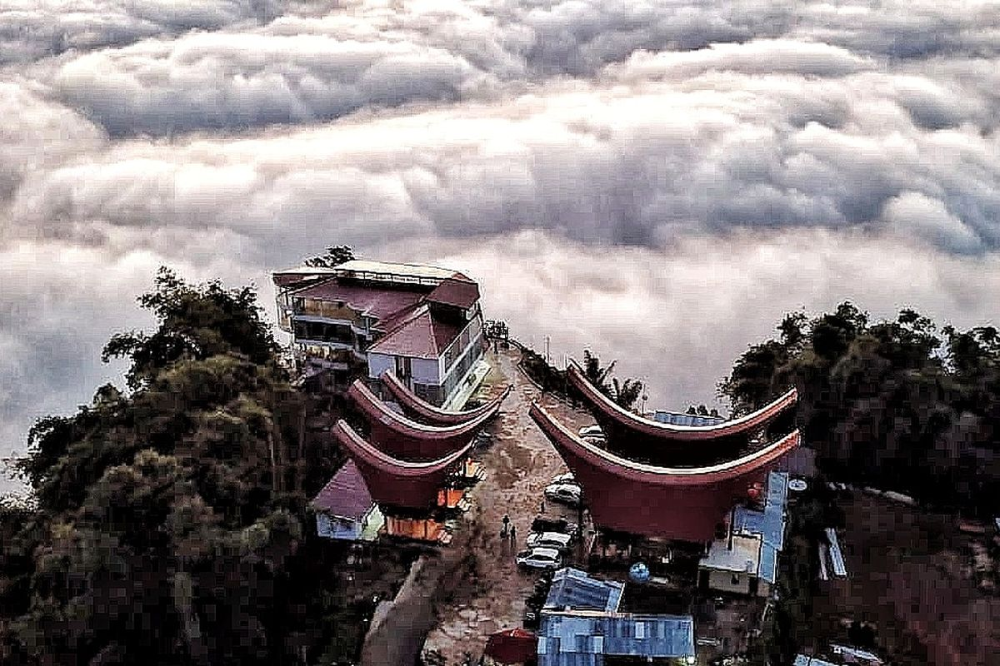
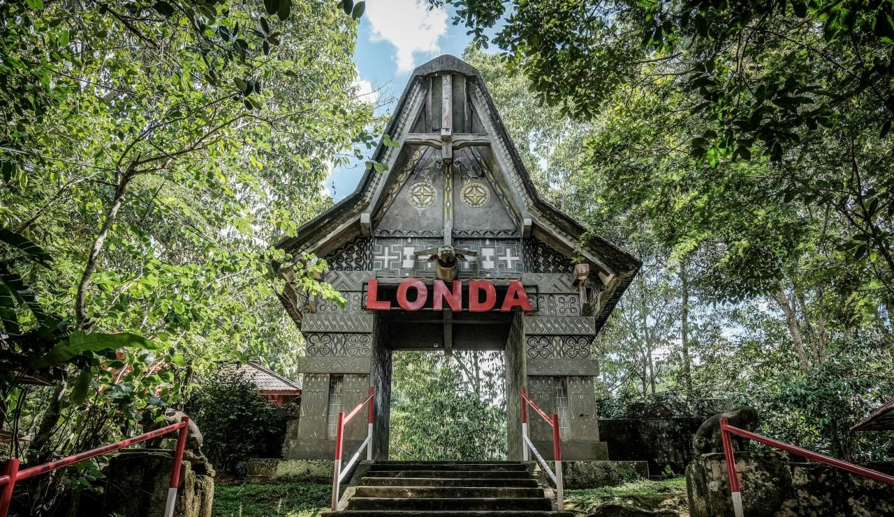
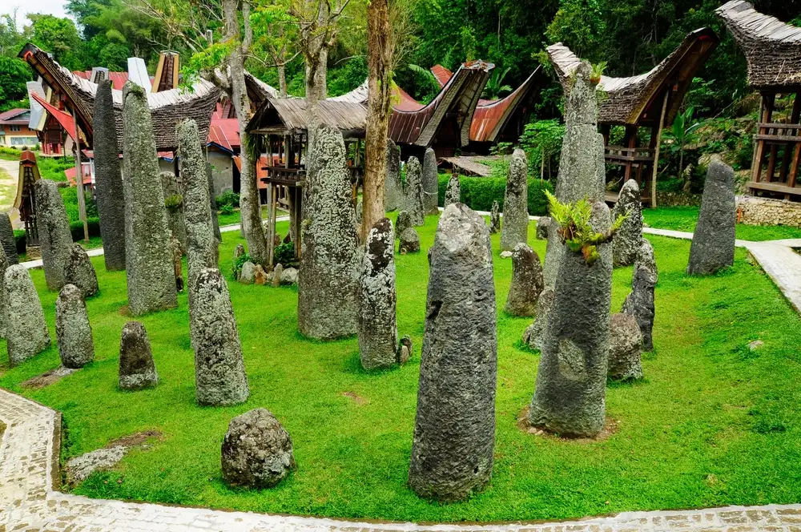

kabupaten toraja utara, sulawesi selatan
Kabupaten Toraja Utara merupakan salah satu kabupaten di Provinsi Sulawesi Selatan.
Ibu kota kabupatennya adalah Rantepao. Toraja Utara resmi menjadi kabupaten sendiri pada 21 Juli 2008,
setelah sebelumnya merupakan bagian dari Kabupaten Tana Toraja.

*tongkonan lempe,toraja utara

*wisata alam londa, toraja utara

*kompleks wisata kalimbuang bori, toraja utara
Marante, Kecamatan Tondon, Kabupaten Toraja Utara, Sulawesi Selatan 91833, Indonesia.
jarak dari makassar: 330km(sekitar 8 jam berkendara)
"| kategori | keterangan | biaya |
|---|---|---|
| Tiket Masuk Destinasi | per orang | Rp 10.000 - 50.000 |
| Wisata Alam (Lolai) | Per orang | Rp 10.000 |
| Pemandu Lokal | Per kelompok (1-5 orang) | Rp 150.000 - 300.000 |